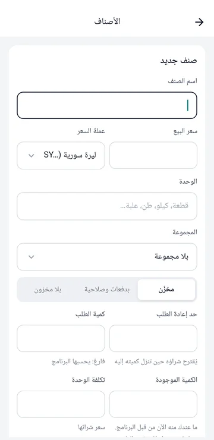
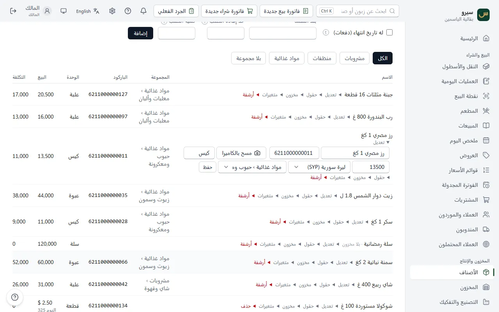
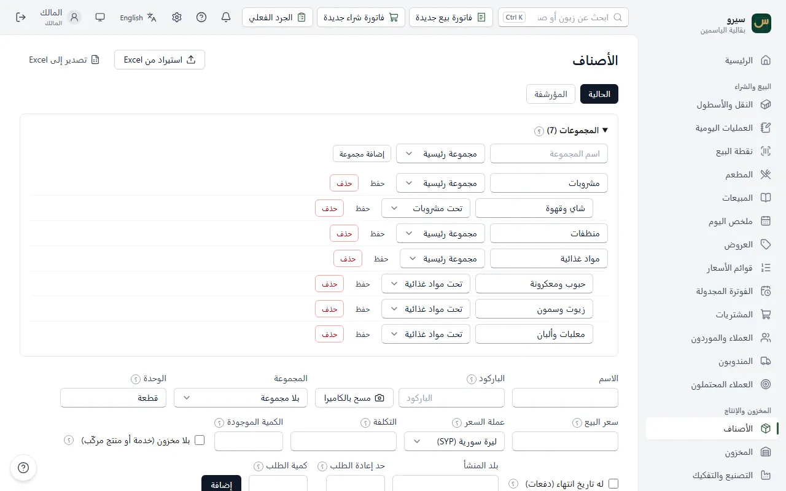
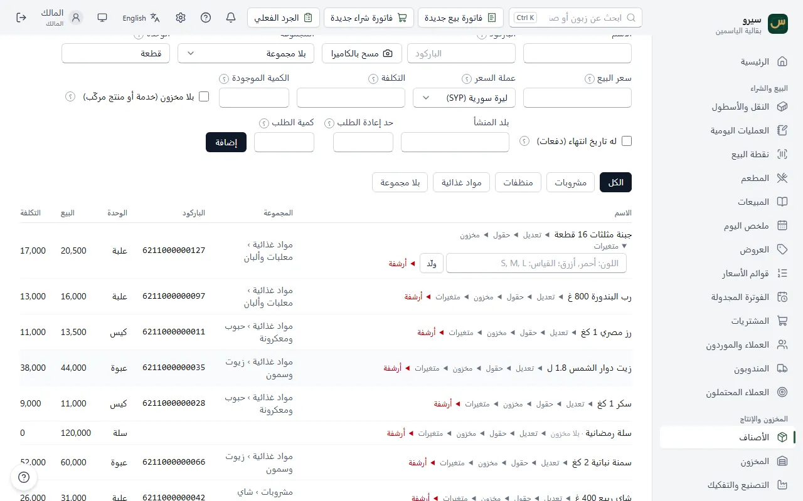
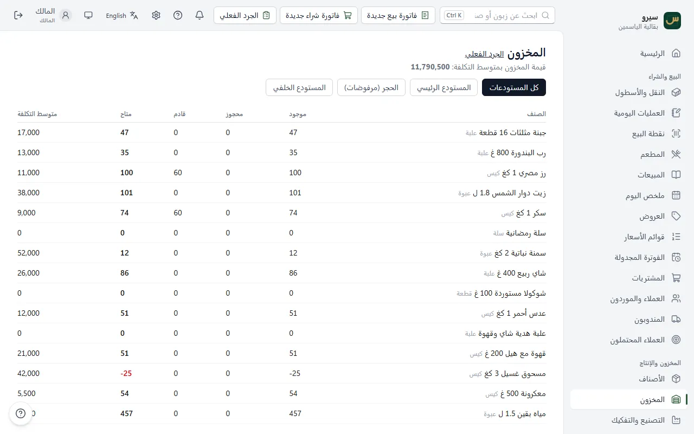
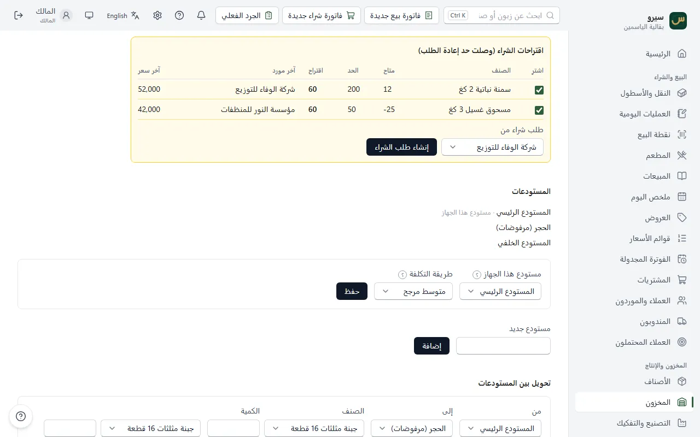
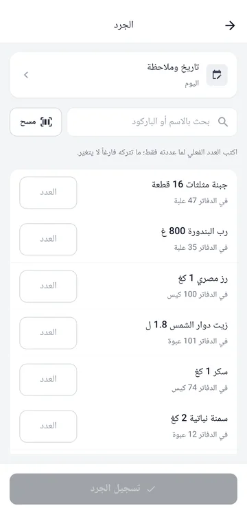
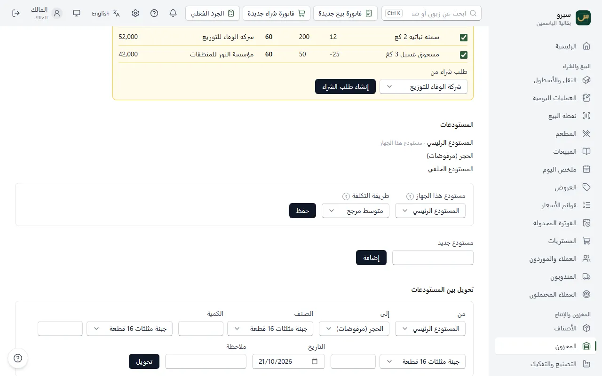

المخزون والأصناف
كل صنف بباركوده وسعره ووحدته. الكميات تتغيّر وحدها مع البيع والشراء، والجرد يصحّح الفرق.
- إضافة صنف
- تعديل صنف أو سعره
- حذف صنف أو أرشفته
- مجموعات الأصناف
- متغيرات: ألوان ومقاسات
- كم بقي عندي من كل صنف؟
- الدفعات وتاريخ الانتهاء
- إعادة الطلب: ماذا أشتري؟
- الجرد
- الباركود والمسح
- عدة مستودعات
- أصناف كثيرة؟
إضافة صنف
- افتح الأصناف.
- اكتب الاسم، والباركود إن وُجد، والوحدة (قطعة، كيلو، طن، علبة…) وسعر البيع.
- عندك منه الآن؟ اكتب التكلفة (سعر شراء الوحدة) والكمية الموجودة، مثلاً 50 طن (للمالك والمحاسب). الصنف الذي له تاريخ انتهاء تدخل كميته بفاتورة شراء مع رقم الدفعة.
- اضغط إضافة.


- بلا مخزون: لخدمة لا تُعدّ (توصيل، صيانة)، أو لمنتج مركّب تُخصم قطعه عند كل بيع.
- له تاريخ انتهاء: للأدوية والأغذية؛ يبيع البرنامج الأقرب انتهاءً أولاً.
- حد إعادة الطلب: حين تنزل كميته إلى الحد أو أقل يقترحه البرنامج للشراء.
على الجوال: الأصناف ← جديد وفيه الوحدة والنوع (مخزّن، بدفعات وصلاحية، بلا مخزون) وحد إعادة الطلب وكمية الطلب، والكمية الموجودة وتكلفة الوحدة لمن عنده صلاحية المحاسبة. اضغط صنفاً لتعديله.

تعديل صنف أو سعره
- في الأصناف اضغط تعديل تحت اسم الصنف: الاسم والباركود والوحدة وسعر البيع والمجموعة، ثم حفظ.
- مخزون تحت الاسم: تاريخ الانتهاء وحد إعادة الطلب وكمية الطلب.
- التكلفة لا تُعدَّل: تحسبها المشتريات وحدها. والكمية يصحّحها الجرد.
- أسعار كثيرة دفعة واحدة: من Excel. سعر خاص لزبائن الجملة: قوائم الأسعار.

على الجوال: اضغط الصنف في الأصناف، وصحّح ما تريد ثم احفظ.
حذف صنف أو أرشفته
- في الأصناف اضغط حذف أو أرشفة تحت اسم الصنف؛ الزر يقول ما سيحدث.
- اقرأ ما سيحدث واضغط تأكيد الحذف أو تأكيد الأرشفة.
- صنف بلا فواتير ولا حركات مخزون (أضفته خطأً أو مكرراً) يُحذف نهائياً، ويبقى أثر الحذف في سجل التدقيق.
- صنف له فواتير أو حركات يُؤرشف ولا يُحذف: يختفي من القائمة ومن اختيار الأصناف في البيع والشراء ونقطة البيع والمطعم والتصنيع، ومن البحث واقتراحات إعادة الطلب وملف Excel، وتبقى فواتيره وحركاته وتقاريره كما هي.
لا يُؤرشف صنف:
- في المخزون منه كمية: تقول الرسالة كم وفي أي مستودع. صفّرها بـالجرد ثم أرشفه.
- قالب له متغيرات حالية: أرشف المتغيرات أولاً.
- داخل في وصفة فعّالة: تذكر الرسالة الوصفة؛ احذفه منها بنسخة جديدة في التصنيع.
للاستعادة: المؤرشفة أعلى الأصناف ثم استعادة، أو استورد الصنف من Excel باسمه فيعود. باركود الصنف المؤرشف يبقى له، فإن أردته لصنف آخر استعد المؤرشف وامسح باركوده.
على الجوال: اضغط الصنف ثم حذف أو أرشفة أسفل النموذج، والمؤرشفة أعلى القائمة؛ اضغط صنفاً مؤرشفاً لاستعادته.
مجموعات الأصناف
رتّب الأصناف في مجموعات رئيسية (مواد غذائية، منظفات…) وتحت كل منها مجموعات فرعية (حبوب، زيوت…). المجموعات للفرز والبحث فقط، ولا تغيّر شيئاً في الحسابات.
- في الأصناف افتح المجموعات.
- اكتب اسم المجموعة واترك مكانها مجموعة رئيسية، أو اختر «تحت» مجموعة رئيسية لتصير فرعية، ثم إضافة مجموعة.
- اختر المجموعة لكل صنف عند إضافته أو من تعديل.
- أزرار المجموعات فوق القائمة تعرض أصناف مجموعة واحدة؛ الرئيسية تعرض فرعياتها معها، وبلا مجموعة تعرض ما لم يُرتَّب بعد.
- في نقطة البيع تظهر الأزرار نفسها فوق الأصناف.
- تغيير مجموعة صنف له متغيرات ينقل متغيراته معه.
- تُحذف المجموعة الفارغة فقط: انقل أصنافها أولاً.
- من Excel: عمود المجموعة يأخذ «مواد غذائية › حبوب»، والمجموعة غير الموجودة تُنشأ. الاستيراد من Excel.

على الجوال: الأصناف ← زر المجموعات لإضافتها وتعديلها، واختيار المجموعة تحت البحث يعرض أصنافها. في الفاتورة يكفي أن تكتب اسم المجموعة في بحث الأصناف.
متغيرات: ألوان ومقاسات
صنف واحد بألوان أو مقاسات (قميص أحمر وأزرق بمقاس S وM وL) يصير أصنافاً منفصلة، لكل منها مخزونه وسعره وباركوده.
- في الأصناف افتح متغيرات تحت الصنف.
- اكتب المحاور هكذا: «اللون: أحمر, أزرق؛ القياس: S, M, L» واضغط ولّد.
- يصير الصنف الأصلي قالباً لا يُباع، وتظهر متغيراته في البيع والشراء والجرد.
- الصنف الذي له مخزون لا يصير قالباً: انقل كميته أو صفّرها بالجرد أولاً.

على الجوال: اضغط الصنف في الأصناف، اكتب المحاور بالطريقة نفسها واضغط ولّد المتغيرات.
كم بقي عندي من كل صنف؟
- المخزون يعرض كل صنف: الموجود، والمحجوز للطلبات، والقادم من المشتريات، والتكلفة.
- يقترح البرنامج شراء ما نزل تحت حد إعادة الطلب: إعادة الطلب.
- صنف أضفته بلا كمية من قبل؟ اكتب كميته الفعلية في الجرد.
- الكمية ضعف ما عندك؟ غالباً كتبتها في الكمية الموجودة حين أضفت الصنف ثم سجّلت فاتورة شرائها أيضاً، فدخلت مرتين. صحّحها بـالجرد بالعدد الفعلي. الكمية الموجودة لما عندك من قبل البرنامج فقط؛ البضاعة الجديدة تدخل بفاتورة الشراء وحدها.

على الجوال: المستودعات والكميات يعرض الموجود والمحجوز والقادم والمتاح لكل صنف، لمستودع واحد أو للكل، مع قيمة المخزون. والأصناف يعرض كمية مستودع هذا الجهاز، ومعها «في مستودعات أخرى» إن كان للصنف كمية في غيره: الصفر هنا لا يعني أن الصنف غير موجود.
الدفعات وتاريخ الانتهاء
- اجعل الصنف له تاريخ انتهاء (على الجوال: النوع بدفعات وصلاحية).
- في فاتورة الشراء اكتب لكل سطر منه رقم الدفعة وتاريخ انتهائها (على الجوال مثل 31/12/2026).
- البيع يسحب من الأقرب انتهاءً أولاً، ولا يبيع من دفعة منتهية.
- ما ينتهي خلال 30 يوماً أو انتهى: أسفل المخزون على الكمبيوتر، والدفعات والصلاحية على الجوال. وكميات كل دفعة لصنف تختاره: دفعات صنف في الشاشتين (على الكمبيوتر اختر الصنف واضغط عرض؛ مع مستودع مختار تظهر دفعاته فيه فقط).
- المنتهي يُتلف هكذا: فحص جودة يسجّله مرفوضاً فينتقل إلى الحجر، ثم إتلاف من هناك.
إعادة الطلب: ماذا أشتري؟
- ضع لكل صنف حد إعادة الطلب، وكمية الطلب إن كنت تشتري كمية ثابتة.
- حين تنزل كميته المتاحة إلى الحد أو أقل يظهر في اقتراحات الشراء (وصلت حد إعادة الطلب) أسفل المخزون (على الجوال: إعادة الطلب) مع آخر مورد وآخر سعر.
- اختر المورد واضغط إنشاء طلب الشراء. الطلب المفتوح يُحسب قادماً فلا يُقترح الصنف مرتين، ويُستلم من طلبات الشراء.

الجرد
- افتح المخزون ← الجرد الفعلي واختر المستودع.
- اكتب الكمية المعدودة لكل صنف، أو امسح الباركود بـ مسح بالكاميرا.
- اضغط اعتماد الجرد. يُصحَّح المخزون ويُقيَّد الفرق نقصاً أو زيادة.

على الجوال: الجرد يجرد مستودع هذا الجهاز: ابحث بالاسم أو الباركود، اكتب المعدود، ثم تسجيل الجرد. زر مسح بجانب البحث يقرأ الباركود بالكاميرا ويزيد معدود الصنف واحداً مع كل مسح. إن كان للشركة أكثر من مستودع فاختر أولاً المستودع الذي تجرده، واكتب ما فيه وحده: سطر الصنف يقول «في مستودعات أخرى» ما في غيره، فلا تعدّ البضاعة نفسها في مستودعين فتتضاعف كميتها. تاريخ وملاحظة أعلى القائمة لجرد يوم سابق، وأسفلها جرود سابقة بفروقات كل جرد.

الباركود والمسح
- على الكمبيوتر: أي قارئ باركود يُوصل بالـ USB يعمل مباشرة، كأنه لوحة مفاتيح. امسح في خانة البحث أو خانة الباركود.
- بلا قارئ: مسح بالكاميرا بجانب خانة الباركود عند إضافة صنف أو تعديله، وفي نقطة البيع والجرد، يقرأ بكاميرا الكمبيوتر.
- ميزان يطبع ملصقات باركود: الإعدادات ← نقطة البيع ← باركود الميزان (على الكمبيوتر فقط).
على الجوال: زر مسح يفتح الكاميرا. ثبّت الجوال لحظة على الباركود. تفتح ولا تقرأ؟ الحل.
عدة مستودعات
صفحة المخزون تعرض كل مستودع وحده، والنقل بينها يحفظ الكميات ولا يغيّر الحسابات. لكل جهاز مستودعه، وسيارة المندوب مستودع.
- مستودع جديد: مستودع جديد ثم إضافة.
- مستودع هذا الجهاز (منه تخرج مبيعاته وإليه تدخل مشترياته): يختاره المالك. الجوال أو التابلت المربوط بكمبيوتر الشركة يبدأ بمستودع فارغ باسمه («مستودع M1»)؛ إن كان يبيع من بضاعة المستودع الرئيسي فاجعل ذلك مستودعه.
- طريقة التكلفة: متوسط مرجح (الافتراضي، متوسط كل المشتريات) أو الوارد أولاً (FIFO) (سعر أقدم شحنة). بها تُحسب تكلفة ما يُباع. غيّرها بعد استشارة محاسبك.
- التحويل: اختر من وإلى والأصناف والكميات، ثم تحويل. لا يُحوَّل أكثر مما في المستودع المصدر.

على الجوال: المستودعات والكميات ← المستودعات للإضافة واختيار مستودع الجهاز، وتحويل مخزون للنقل بين المستودعات مع مسح الباركود، بتاريخه وملاحظته.
أصناف كثيرة؟
أدخلها دفعة واحدة من Excel مع كمياتها وأسعارها: الاستيراد من Excel.
على الجوال: زر Excel في الأصناف (كيف).